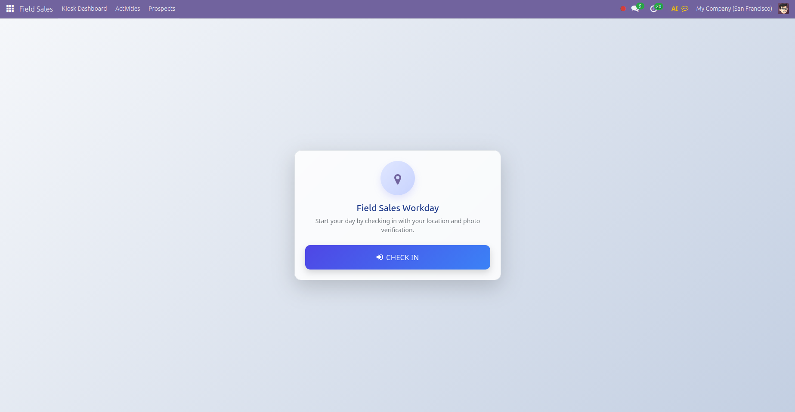
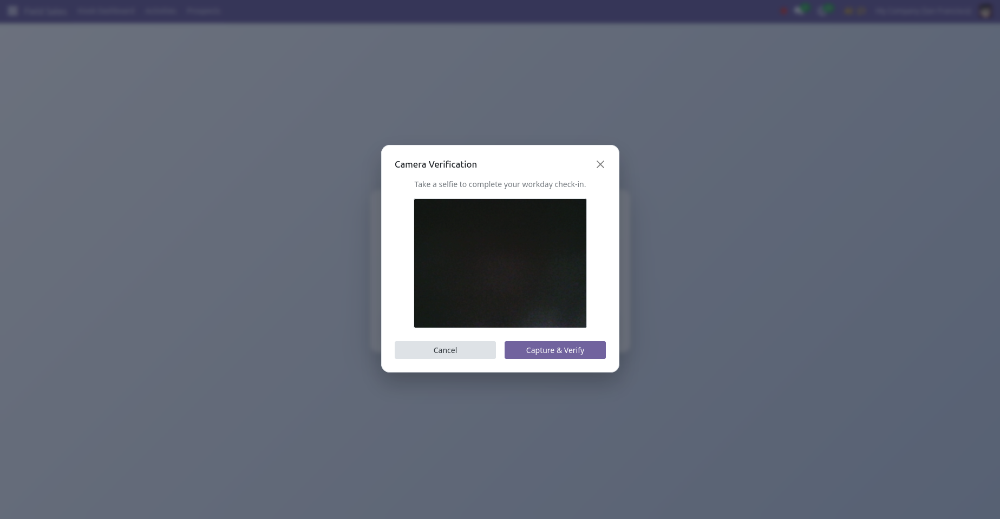
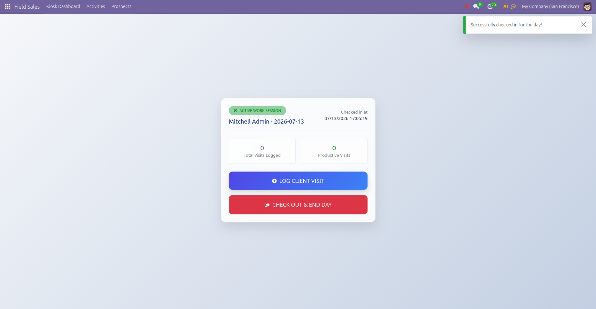
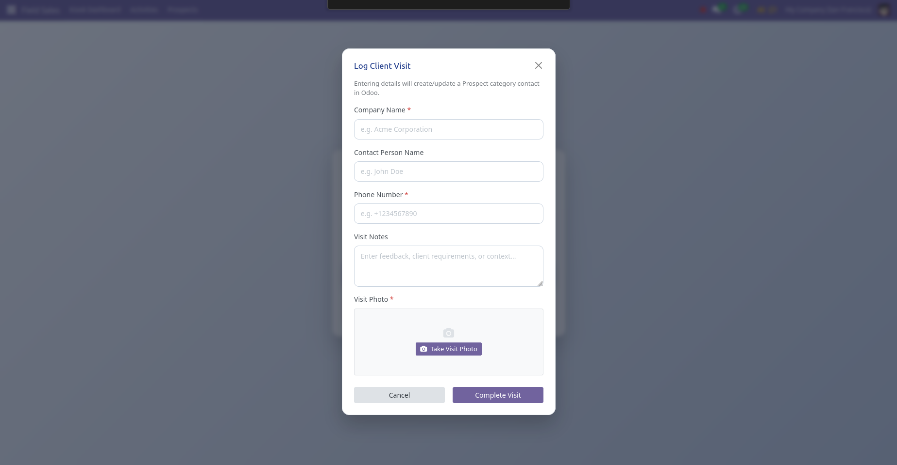
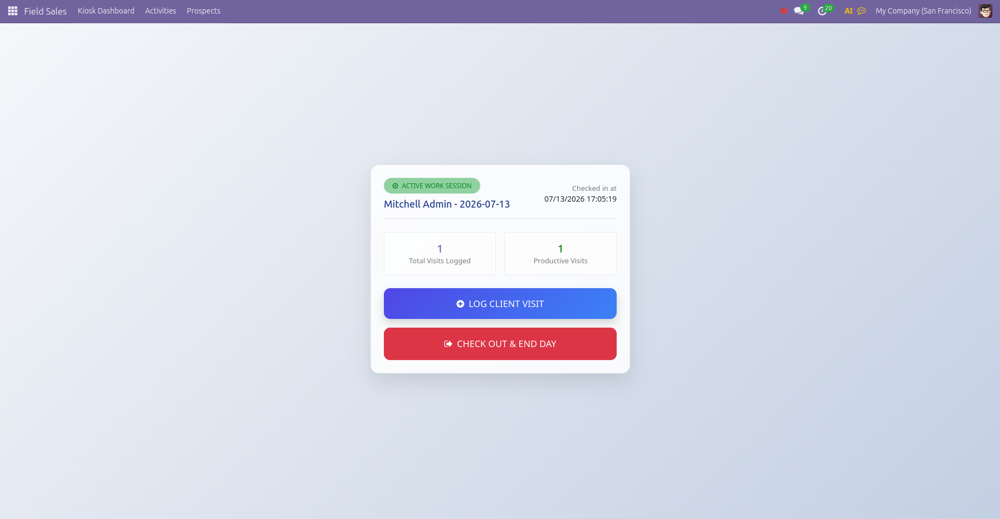
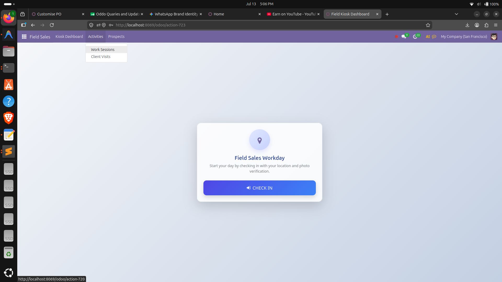
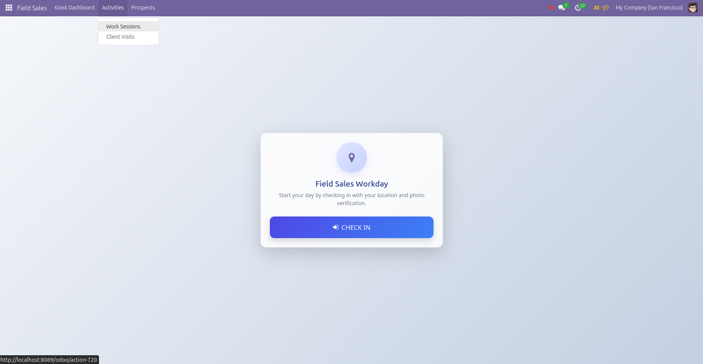
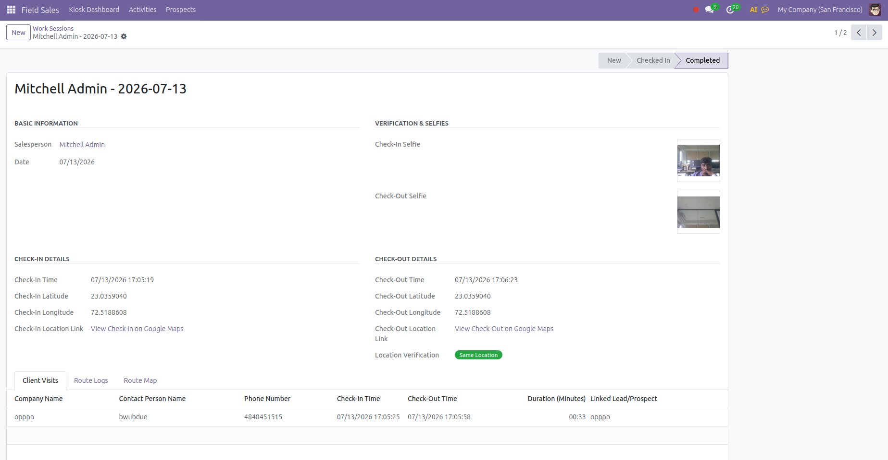
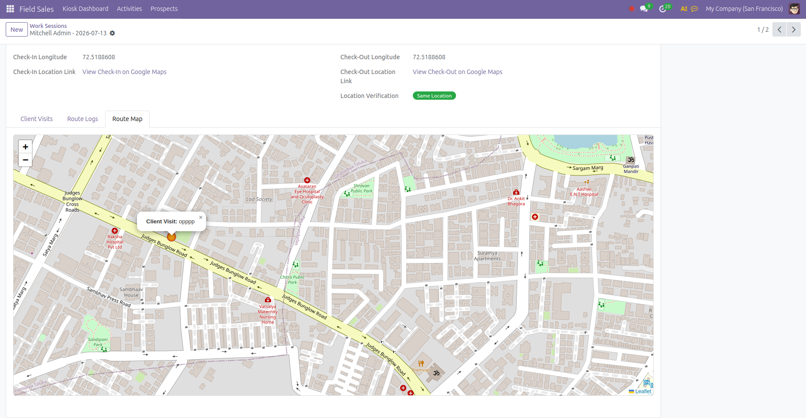

Empower your field agents with kiosk-style GPS check-ins, route trajectories, photo verifications, and automated lead capture, all managed natively inside Odoo.
A feature-complete mobile dashboard and manager tracking system designed for modern remote sales forces.
Captures high-accuracy GPS coordinates during check-ins, check-outs, and client visits, storing signal accuracy in meters.
Requires reps to take a selfie check-in, check-out, and store-front client photos to guarantee presence and eliminate fraud.
Visualizes sales rep paths on an interactive Leaflet map interface, showing chronological checkpoints and route navigation.
Automatically creates or updates Res.Partner contacts with a customizable "Field Lead" category tag for seamless sales pipelines.
Integrates a background Haversine algorithm checking if check-out occurred within 200m of check-in, highlighting location integrity.
Generates robust, presentation-ready PDF visit logs and session summaries with photo proofs and direct Google Maps location links.
Take a visual tour of the Field Sales agent workflow and the manager's auditing dashboard.


Representatives start their day on any mobile or desktop web browser by accessing the clean, responsive kiosk portal. The application ensures accountability from the first minute.
Clicking "CHECK IN" triggers high-accuracy HTML5 geolocation acquisition, binding the representative's precise start location and GPS signal accuracy directly to their work session.
An integrated camera viewport automatically initializes, prompting the agent to snap a check-in verification photo. This eliminates buddy check-ins and guarantees physical presence.



During the work day, the agent's browser stays on the Active Work Session card. From this central control center, reps can quickly log customer meetings with full contextual details.
Click "LOG CLIENT VISIT" to open a streamlined modal. Enter company details, contact person, phone number, and meeting notes. The system validates fields in real-time.
To prevent spoofed meetings, agents must snap a live photo of the client storefront, business card, or customer handshake. This binary image is logged directly into Odoo.
Saving a visit automatically creates or links a Prospect in the standard Odoo Contact Directory, attaching a special "Field Lead" category tag for marketing follow-ups.


At the end of their route, the representative closes their workday. The system updates their key performance metrics and locks down the session parameters.
The dashboard displays real-time statistics including total logged visits and productive check-ins, allowing agents to track their productivity at a glance.
Clicking "CHECK OUT" triggers the checkout camera modal. A second face verification is captured, alongside end-of-day GPS coordinates to finalize the session data.
Upon check-out, a background Haversine algorithm immediately calculates the geographical distance between check-in and check-out to detect irregular session shifts.


Managers get full backend auditing capabilities. They can review entire representative session history, verification statuses, and geographic travel logs directly inside Odoo.
Review check-in/out times, view selfie verification media, access direct Google Maps coordinates links, and view list views of client visits and route telemetry logs.
The system traces agent locations throughout the day and plots the chronological path on an interactive Leaflet map tab. Visual pins mark check-in, check-out, and individual client visits.
Export elegant, print-ready End-of-Day PDF reports with check-in/out summary data, photo proofs, and direct Google Maps hyper-links for physical record-keeping.
Unlike bloated third-party integrations, Field Sales operates directly within your database, complying with Odoo standard layouts, security groups, and web assets pipelines.
Simplified steps that field representatives follow daily, keeping location auditing automated.
Open Kiosk, take a selfie verification, and log initial GPS coordinates to start the workday.
Record client meetings, fill in details, snap client/store photos, and log exact visit locations.
End day by snapping a checkout photo. System auto-verifies deviation via Haversine distance.
Managers review trajectories, lead logs, and download high-quality End-of-Day PDF summaries.
Technical requirements, metadata list, and easy setup instructions.
| Odoo Version | v18.0 Community & Enterprise |
| Key Dependency | base, web |
| Deployment | On-Premise & Odoo.sh |
| Multi-Branch/Company | Supported |
| License | OPL-1 (Odoo Proprietary) |
| Price Model | One-Time Purchase |
| Support included | Free updates & bug fixes |
| Code quality | Linter and PEP8 compliant |